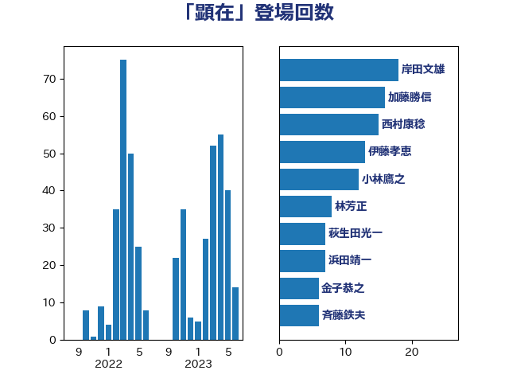

単語「顕在」

| 岸田文雄 | 自由民主党 | 18 回 |
| 加藤勝信 | 自由民主党 | 16 回 |
| 西村康稔 | 自由民主党 | 15 回 |
| 伊藤孝恵 | 国民民主党 | 13 回 |
| 小林鷹之 | 自由民主党 | 12 回 |
| 林芳正 | 自由民主党 | 8 回 |
| 萩生田光一 | 自由民主党 | 7 回 |
| 浜田靖一 | 自由民主党 | 7 回 |
| 金子恭之 | 自由民主党 | 6 回 |
| 斉藤鉄夫 | 公明党 | 6 回 |
| 野田聖子 | 自由民主党 | 5 回 |
| 葉梨康弘 | 自由民主党 | 5 回 |
| 小倉將信 | 自由民主党 | 5 回 |
| 藤巻健太 | 日本維新の会 | 4 回 |
| 浅野哲 | 国民民主党 | 4 回 |
| 松本剛明 | 自由民主党 | 4 回 |
| 後藤茂之 | 自由民主党 | 4 回 |
| 川合孝典 | 国民民主党 | 4 回 |
| 井上哲士 | 日本共産党 | 4 回 |
| 鈴木俊一 | 自由民主党 | 3 回 |
| 足立康史 | 日本維新の会 | 3 回 |
| 米山隆一 | 立憲民主党 | 3 回 |
| 篠原豪 | 立憲民主党 | 3 回 |
| 沢田良 | 日本維新の会 | 3 回 |
| 末松信介 | 自由民主党 | 3 回 |
| 早稲田ゆき | 立憲民主党 | 3 回 |
| 庄子賢一 | 公明党 | 3 回 |
| 大島敦 | 立憲民主党 | 3 回 |
| 倉林明子 | 日本共産党 | 3 回 |
| 上田英俊 | 自由民主党 | 3 回 |
| 三浦信祐 | 公明党 | 3 回 |
| 高木啓 | 自由民主党 | 2 回 |
| 音喜多駿 | 日本維新の会 | 2 回 |
| 阿部司 | 日本維新の会 | 2 回 |
| 長谷川淳二 | 自由民主党 | 2 回 |
| 鈴木英敬 | 自由民主党 | 2 回 |
| 鈴木敦 | 国民民主党 | 2 回 |
| 赤嶺政賢 | 日本共産党 | 2 回 |
| 若宮健嗣 | 自由民主党 | 2 回 |
| 緒方林太郎 | 無所属 | 2 回 |
| 簗和生 | 自由民主党 | 2 回 |
| 笠井亮 | 日本共産党 | 2 回 |
| 福重隆浩 | 公明党 | 2 回 |
| 田名部匡代 | 立憲民主党 | 2 回 |
| 浦野靖人 | 日本維新の会 | 2 回 |
| 河西宏一 | 公明党 | 2 回 |
| 武部新 | 自由民主党 | 2 回 |
| 森本真治 | 立憲民主党 | 2 回 |
| 柴田巧 | 日本維新の会 | 2 回 |
| 松山政司 | 自由民主党 | 2 回 |
| 末松義規 | 立憲民主党 | 2 回 |
| 平沼正二郎 | 自由民主党 | 2 回 |
| 平将明 | 自由民主党 | 2 回 |
| 岸真紀子 | 立憲民主党 | 2 回 |
| 岬麻紀 | 日本維新の会 | 2 回 |
| 山田勝彦 | 立憲民主党 | 2 回 |
| 山本香苗 | 公明党 | 2 回 |
| 山崎誠 | 立憲民主党 | 2 回 |
| 尾身朝子 | 自由民主党 | 2 回 |
| 寺田学 | 立憲民主党 | 2 回 |
| 宮崎勝 | 公明党 | 2 回 |
| 守島正 | 日本維新の会 | 2 回 |
| 城井崇 | 立憲民主党 | 2 回 |
| 吉田とも代 | 日本維新の会 | 2 回 |
| 伊佐進一 | 公明党 | 2 回 |
| 中川康洋 | 公明党 | 2 回 |
| 中川宏昌 | 公明党 | 2 回 |
| 齋藤健 | 自由民主党 | 1 回 |
| 鰐淵洋子 | 公明党 | 1 回 |
| 鬼木誠 | 立憲民主党 | 1 回 |
| 高橋千鶴子 | 日本共産党 | 1 回 |
| 高村正大 | 自由民主党 | 1 回 |
| 馬場伸幸 | 日本維新の会 | 1 回 |
| 青柳陽一郎 | 立憲民主党 | 1 回 |
| 階猛 | 立憲民主党 | 1 回 |
| 阿部知子 | 立憲民主党 | 1 回 |
| 鈴木貴子 | 自由民主党 | 1 回 |
| 金村龍那 | 日本維新の会 | 1 回 |
| 金子道仁 | 日本維新の会 | 1 回 |
| 金子恵美 | 立憲民主党 | 1 回 |
| 重徳和彦 | 立憲民主党 | 1 回 |
| 輿水恵一 | 公明党 | 1 回 |
| 赤池誠章 | 自由民主党 | 1 回 |
| 西田昌司 | 自由民主党 | 1 回 |
| 藤井一博 | 自由民主党 | 1 回 |
| 羽田次郎 | 立憲民主党 | 1 回 |
| 羽生田俊 | 自由民主党 | 1 回 |
| 緑川貴士 | 立憲民主党 | 1 回 |
| 笠浩史 | 無所属 | 1 回 |
| 竹内譲 | 公明党 | 1 回 |
| 秋葉賢也 | 自由民主党 | 1 回 |
| 神田憲次 | 自由民主党 | 1 回 |
| 石川博崇 | 公明党 | 1 回 |
| 石井準一 | 自由民主党 | 1 回 |
| 石井啓一 | 公明党 | 1 回 |
| 田畑裕明 | 自由民主党 | 1 回 |
| 田村貴昭 | 日本共産党 | 1 回 |
| 田嶋要 | 立憲民主党 | 1 回 |
| 甘利明 | 自由民主党 | 1 回 |
| 玉木雄一郎 | 国民民主党 | 1 回 |
| 牧山ひろえ | 立憲民主党 | 1 回 |
| 片山さつき | 自由民主党 | 1 回 |
| 滝波宏文 | 自由民主党 | 1 回 |
| 渡辺周 | 立憲民主党 | 1 回 |
| 浜野喜史 | 国民民主党 | 1 回 |
| 津島淳 | 自由民主党 | 1 回 |
| 河野義博 | 公明党 | 1 回 |
| 河野太郎 | 自由民主党 | 1 回 |
| 池下卓 | 日本維新の会 | 1 回 |
| 永岡桂子 | 自由民主党 | 1 回 |
| 櫻井周 | 立憲民主党 | 1 回 |
| 櫛渕万里 | れいわ新選組 | 1 回 |
| 梅谷守 | 立憲民主党 | 1 回 |
| 柳ヶ瀬裕文 | 日本維新の会 | 1 回 |
| 柚木道義 | 立憲民主党 | 1 回 |
| 杉田水脈 | 自由民主党 | 1 回 |
| 本田顕子 | 自由民主党 | 1 回 |
| 本村伸子 | 日本共産党 | 1 回 |
| 末次精一 | 立憲民主党 | 1 回 |
| 木村次郎 | 自由民主党 | 1 回 |
| 有村治子 | 自由民主党 | 1 回 |
| 新谷正義 | 自由民主党 | 1 回 |
| 斎藤アレックス | 国民民主党 | 1 回 |
| 徳永久志 | 無所属 | 1 回 |
| 広瀬めぐみ | 自由民主党 | 1 回 |
| 川田龍平 | 立憲民主党 | 1 回 |
| 岡本三成 | 公明党 | 1 回 |
| 山本左近 | 自由民主党 | 1 回 |
| 山本太郎 | れいわ新選組 | 1 回 |
| 山崎正恭 | 公明党 | 1 回 |
| 山岡達丸 | 立憲民主党 | 1 回 |
| 山下貴司 | 自由民主党 | 1 回 |
| 小沼巧 | 立憲民主党 | 1 回 |
| 小川淳也 | 立憲民主党 | 1 回 |
| 宮路拓馬 | 自由民主党 | 1 回 |
| 宮崎政久 | 自由民主党 | 1 回 |
| 太田房江 | 自由民主党 | 1 回 |
| 大石あきこ | れいわ新選組 | 1 回 |
| 大塚耕平 | 国民民主党 | 1 回 |
| 大塚拓 | 自由民主党 | 1 回 |
| 大口善徳 | 公明党 | 1 回 |
| 塩川鉄也 | 日本共産党 | 1 回 |
| 堂込麻紀子 | 無所属 | 1 回 |
| 堀井学 | 自由民主党 | 1 回 |
| 國場幸之助 | 自由民主党 | 1 回 |
| 和田政宗 | 自由民主党 | 1 回 |
| 吉川ゆうみ | 自由民主党 | 1 回 |
| 古賀友一郎 | 自由民主党 | 1 回 |
| 古屋範子 | 公明党 | 1 回 |
| 北神圭朗 | 無所属 | 1 回 |
| 加藤竜祥 | 自由民主党 | 1 回 |
| 加田裕之 | 自由民主党 | 1 回 |
| 前川清成 | 日本維新の会 | 1 回 |
| 佐藤英道 | 公明党 | 1 回 |
| 伊東良孝 | 自由民主党 | 1 回 |
| 仁比聡平 | 日本共産党 | 1 回 |
| 仁木博文 | 無所属 | 1 回 |
| 五十嵐清 | 自由民主党 | 1 回 |
| 丸川珠代 | 自由民主党 | 1 回 |
| 中野英幸 | 自由民主党 | 1 回 |
| 中曽根康隆 | 自由民主党 | 1 回 |
| 中川正春 | 立憲民主党 | 1 回 |
| 中山展宏 | 自由民主党 | 1 回 |
| 上野賢一郎 | 自由民主党 | 1 回 |
| 上月良祐 | 自由民主党 | 1 回 |
| 上川陽子 | 自由民主党 | 1 回 |
| おおつき紅葉 | 立憲民主党 | 1 回 |